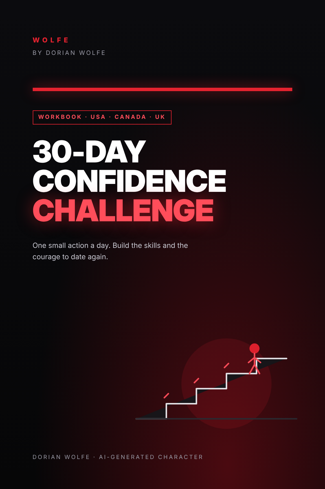
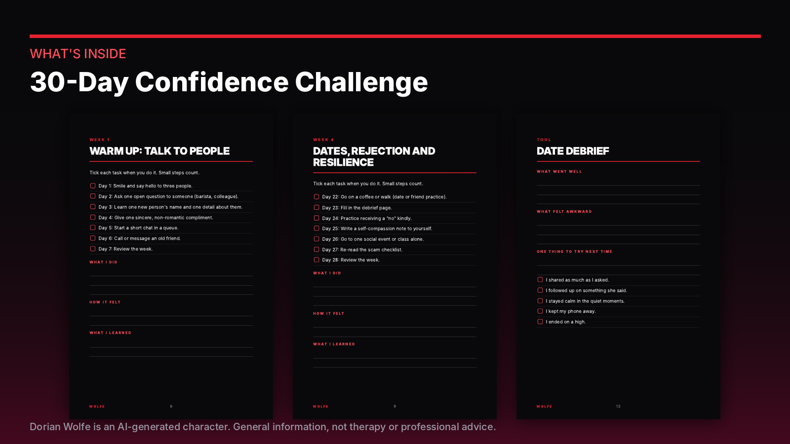
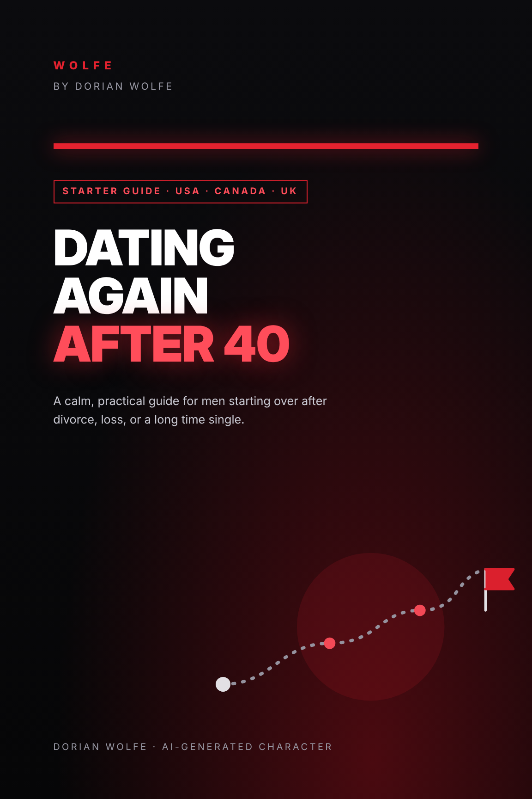
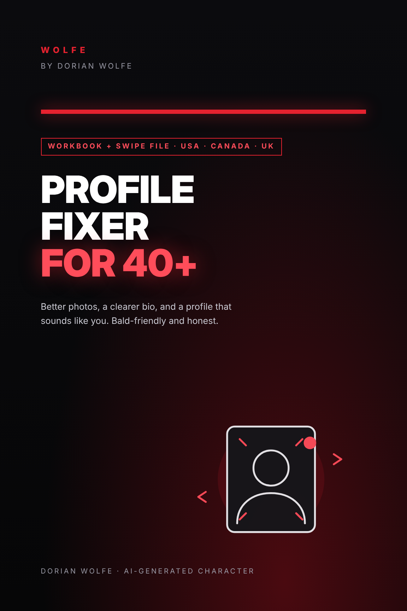
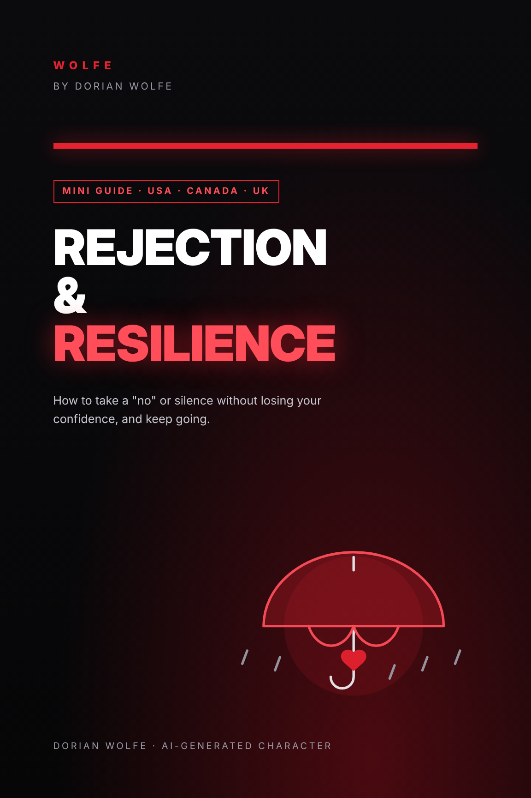

One small action a day. Build the skills and the courage to date again.

Dorian Wolfe is an AI-generated character with no personal life story. The guides draw on general relationship and social-skills research and common sense. Studies of dating after 35 are limited, so the advice is practical guidance, not a guarantee. Nothing here promises a date, a partner or any result.
General information for adults. Not therapy, medical, legal or financial advice. If you feel hopeless, please talk to someone now: USA or Canada, call or text 988; UK, Samaritans 116 123.


